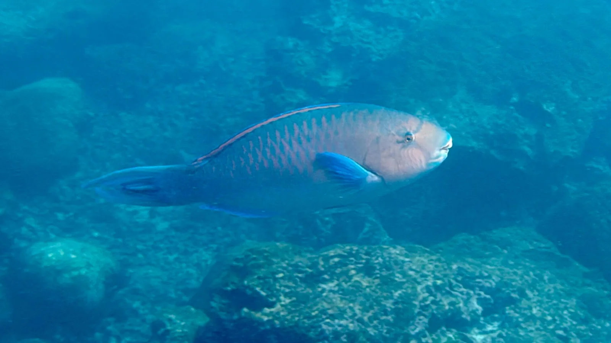

Punta Carola
Galápagos, Équateur · surf, snorkeling

Plage proche de Puerto Baquerizo Moreno, sur l’île San Cristóbal, fréquentée par les lions de mer. Sa vague de récif, rapide et creuse, fonctionne surtout avec les houles du nord pendant la saison chaude.
- Lieu
- Galápagos, Équateur
- Niveau
- Expert
- Activités
- surf, snorkeling
- Type d'eau
- Mer / océan
- Coordonnées
- -0.89, -89.61 (position approximative du secteur)
Dangers à connaître
- Récif de lave et de corail peu profond.
- Lions de mer curieux : ne les approche pas et ne les touche pas.
Le conseil d'Ocean Buddy
Surf réservé aux confirmés ; les jours plats, la plage reste un bon endroit pour observer les lions de mer.
Ouvrir dans Ocean Buddy Télécharger sur l'App Store
Source : Fiche Ocean Buddy · septembre 2026 · à vérifier localement.